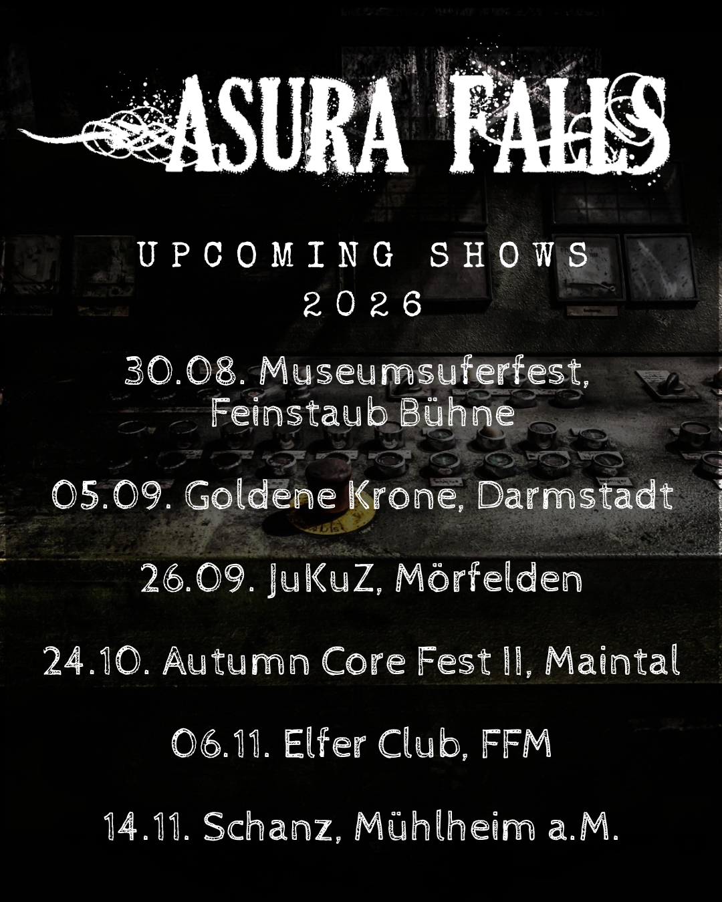
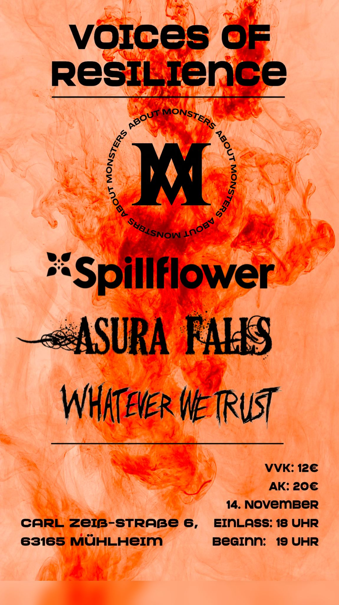

The Band
Asura Falls stand for high-energy modern metalcore with a clear message, massive riffs, and two unmistakable voices. The six-piece band combines melodic depth, emotional intensity, and uncommon diversity into their music.
With influences from Bullet For My Valentine, Killswitch Engage, and In Flames, Asura Falls create a powerful blend of catchy melodies, aggressive breakdowns, and atmospheric moments. Clean vocals and raw screams meet heavy guitar riffs, surprising you at every turn.
Since the relaunch with Jenny and Nemo on vocals, the band has gained a fresh dynamic. Together with Jonas (8-string guitar), Cons (7-string lead guitar), Sueri (bass), and Erausmus (drums), they form a six-piece powerhouse ready to conquer stages.
Whether on big stages or in intimate club shows, Asura Falls stand for authenticity, passion, and electrifying live energy. The band transforms small clubs and large stages alike into a sea of movement and emotion.
With new songs and upcoming shows, Asura Falls are ready for the next step — uncompromising, honest, and driven by a clear goal: to bring their music to the world.

Jenny - Vocals
Even as a small child, Jenny loved being on stage — no matter where she was. If she liked a song, she would sing along and dance to it. During her teenage years, her musical talent developed steadily, and she has been singing in bands ever since. With her captivating stage presence and a compelling voice that ranges from soft and sensitive to powerful and aggressive, she brings tremendous dynamic energy to the band.

Mark "Nemo" Förster - Vocals
Nemo discovered his passion for music at an early age and, many years later, is now the frontman of Asura Falls. With his long-standing experience as a shouter, rapper, and lyricist, he brings intense conviction and raw emotion to every performance, captivating audiences with his powerful stage presence.

Jonas - 8-String
Inspired by his music teacher, Jonas began his musical journey relatively late — but all the more determined. His path — and with it the search for his own sound — was shaped by countless bands and artists, from classic rock to modern metal. Armed with eight strings and his songwriting skills, Jonas lays a foundation of heaviness and melancholy on which the band builds its songs. Even though he rarely stands in the spotlight, he is indispensable as the rhythm guitarist and the band's in-house "tech guy," making a crucial contribution to their overall sound.

Cons - 8-String
Since day one, Cons has been a founding member, lead guitarist, and therefore the "veteran" of our band. He has been playing guitar since the age of eight, and his influences from classic blues and metal have played a major role in shaping the distinctive Asura sound. Inspired by modern core bands, he transforms ideas into melodic riffs and enhances them with atmospheric synth elements.

Sueri - Bass
Sueri discovered his passion for low tones at the age of 14 — his roots lie in the skate punk of the early 2000s. After a longer break, he has been a permanent member of Asura Falls since 2016 and, as the band's valued bassist, provides the essential foundation that makes our music truly complete.

Erasmus - Drums
Although he masters several instruments, his true passion lies behind the drums. Influenced by a wide range of styles — from video game soundtracks to progressive metal — his playing combines powerful beats with playful fills, creating a distinctive energy that drives Asura Falls forward.
Upcoming Shows

Season 2026
Stay tuned for more updates on our upcoming tour dates.

14.11.2026 - Mühlheim am Main
Location: Kulturhalle Schanz
With: About Monsters, Spillflower, Whatever We Trust
Get TicketsYouTube
Accept external services to load our YouTube playlist.
Spotify
Accept external services to load the Spotify player.
Press


EPK & Stage Rider
Download our Electronic Press Kit and Stage/Tech-Rider.
Includes high-res band photos, logos, and technical requirements.
Contact
Reach out to us for booking and inquiries.
asurafalls.ffm@gmail.comWe are always open for collaborations and shows.